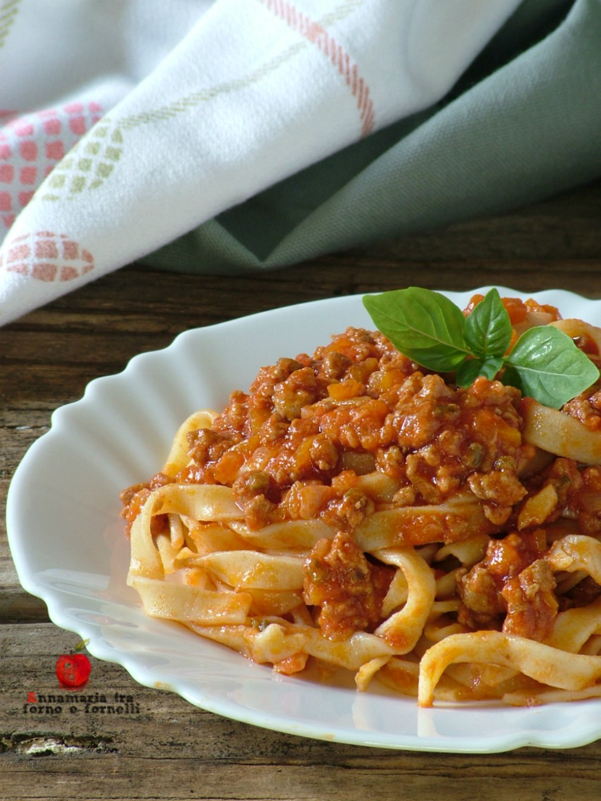

Ricette italiane
Le migliori ricette della penisola
Tagliatelle al ragù

Ingredienti
- 400 g Tagliatelle
- 1 Cipolle
- 1 spicchio Aglio
- 500 ml Passata di pomodoro
- 150 g Carne di suino trita
- q.b. Sale
- q.b. Noce moscata
- 60 g Parmigiano raggiano
- 1 Carote
- 1 Sedano
- 1 bicchieri vino
- 150 g Carne di bovino trita
- 1 foglia Alloro
- q.b. Pepe
- q.b. Olio di oliva
Preparazione
- Pelare la carota, lavare la costa di sedano e mondare la cipolla e l’aglio, quindi tritare le verdure, aiutandosi con un robot da cucina. Mettere dell’olio in un tegame e lasciare scaldare.
- Aggiungere il trito di carota cipolla e sedano e lasciare rosolare. Unire ora la carne bovina e la carne di suino trita e lasciare rosolare anche queste a fuoco dolce. Sfumare con il vino e lasciare evaporare.
- Versare nel tegame la passata di pomodoro, quindi aggiustare di sale e pepe, mettendo anche un pizzico di noce moscata e la foglia di alloro che porterà profumo al ragù di carne. Mescolare bene e coprire con un coperchio.
- Lasciare cuocere a fuoco dolce per circa 45-50 minuti, rigirando spesso con un cucchiaio di legno, per evitare che il ragù possa attaccarsi sul fondo del tegame. Mettere sul fuoco una pentola con abbondante acqua salata e portarla a bollore.
- Buttarvi dentro le tagliatelle e scolarle subito, non appena l’acqua ricomincia a bollire. Trattandosi di una pasta fresca, la cottura sarà molto veloce.
- scolare bene la pasta, condirla con il ragù e portarla a tavola.
- Aggiungere del parmigiano, se gradito.
- Buon appetito!